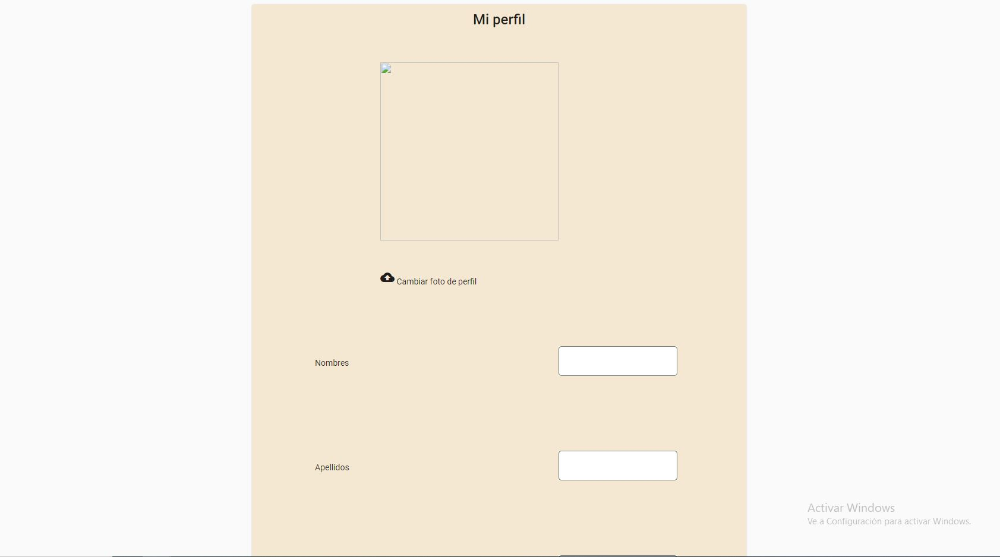
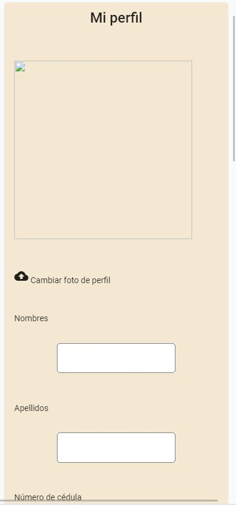

Perfil¶
Perfil para versión web
Perfil para versión movil
- Descripción
Esta sección requiere haber iniciado sesión dentro de la aplicacion, en esta se muestra la información que el usuario suministro en en su registro, adicional a esto, el usuario puede ver su foto de perfil, la cual inicialmente es determinada por defecto pero es posible cambiarla precionando el icono de cambiar imagen.
- Importaciones
Para este componente se debe importar el módulo de Angular Material en el ngModule de perfil. Es necesario la importación del Angular FireAuth para conocer el usuario en sesión y el RegistrosService para buscar la información de ese usuario en la base de datos. Se importa el servicio de los municipios de colombia para poder utilizar la API para el autocompletado. Se importa el servicio de AngularFireStorage para la correcta modificación de la imagen del usuario.
import { RegistrosService } from 'src/app/services/registros.service'; import { AngularFireAuth } from '@angular/fire/auth'; import {MunicipiosColombiaService} from 'src/app/services/municipios-colombia.service'; import { AngularFireStorage } from '@angular/fire/storage';
- Desarrollo
El cambiar imagen permite subir al firestore una nueva foto y actualizar el link de la ruta en la infromación del usuario de la base de datos. Con el boton de editar, permite habilitar los campos de perfil para poder cambiar la información que se encuentra en la base de datos, los campos habilitados de cedula validan que al realizar el cambio no se encuentre repetida en la base de datos, los campos de ciudad y departamento cuentan con el autocompletado de la API de los municipios de Colombia suministrada por datos del govierno. El campo de correo electronico se encuntra deshabilitado para la edición ya que este es el dato de identificación dentro de la aplicacion.